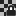

Os diálogos seguintes permitem com que você controle e manipule as estruturas da imagem, tais como camadas, canais, ou vetores.

A caixa de diálogo “Camadas” é a interface principal para editar, modificar e gerenciar suas camadas.
O diálogo de “Buffers” é um diálogo de encaixe;veja a seção Seção 2.3, “Caixas de diálogo e de encaixe” para mais informações sobre como gerenciá-lo.
Você pode acessa-lo:
-
from the main menu: → → ;
-
from the Tab menu in any dockable dialog by clicking the tab menu button
 and selecting
→ ,
and selecting
→ ,
-
Do atalho de teclado padrão Ctrl+L
In the menu, there is a list of detached windows which exists only if at least one dialog remains open. In this case, you can raise the “Layers” dialog from the main menu: → .
- Visão geral
-
Every layer appears in the dialog in the form of a thumbnail. When an image has multiple layers as components, they appear as a list. The upper layer in the list is the first one visible, and the lowest layer the last visible, the background. Above the list one can find characteristics related individually to each layer. Under the list one can find management buttons for the layer list. A right-click on a layer thumbnail opens the Layer context menu.
- Selecting multiple layers
-
GIMP allows you to select multiple layers and perform actions on them. You can e.g. move them to a different location in the layer stack, scale them, etc. Selecting multiple layers is done by using the mouse and Shift key, for adding a range of layers, or Ctrl key, for adding or removing the clicked layer.
Be aware that certain actions can only be done on a single layer. If you try to use such an action, e.g. using the paintbrush, a warning message will show up telling you that you can't do that and that you have to select a single layer.
- Layer list header
-
Directly above the layer list is the header bar. On the left are three icons that show which column is used for visibility, lock, and layer effects. In the middle a text label will tell you how many layers are currently selected if it is more than one. On the right you see a search icon. Clicking in this part opens a search dialog where you can search for layers.
-
 Search layers and Saved searches
Search layers and Saved searches
-
Searching layers can be useful if you have a lot of layers in your project. As soon as you start typing in the search bar, it will start finding layers that match your search and select them. Multiple layers will be selected if they all match.
Below the search bar you will see a plus icon. Clicking this allows you to add the current search as a new named set. This search, and previously defined ones, will show up below the search bar. Clicking one of these saved searches will select all the layers matching the search term. Each saved search has a close icon in the right corner, which can be used to remove that saved search.
-
- Atributos de camada
-
Every layer is shown in the list with its own attributes:
-
 Visibilidade da camada
Visibilidade da camada
-
Clicking this icon toggles whether the layer is visible or not. (Shift-clicking on the icon causes all other same-level layers to be shown or hidden alternatively. Alt-clicking on the icon causes all other selected layers on the same level to be shown or hidden alternatively.)
-
 Travar
Travar
-
Clicking on the empty checkbox in the lock column of a layer opens a menu with the following options. (Shift-clicking on an icon causes all other same-level layers to be locked or unlocked alternatively. Alt-clicking on an icon causes all other selected layers on the same level to be locked or unlocked alternatively.)
-
 Travar pixels
Travar pixels
-
When this toggle button is enabled, you cannot use any brush-based tool (Paintbrush, Pencil, Eraser etc.), the Airbrush or the Ink tool on the currently selected layer. This allows you to protect them from unwanted changes.
-
 Travar posição e tamanho
Travar posição e tamanho
-
This toggle button enables or disables protection of layers from moving them around or transforming them. When this is enabled, then you cannot use any transform tool (Rotate, Shear, Perspective and others) or move it.
-
 Lock visibility
Lock visibility
-
This toggle button controls the “Lock” setting for the visibility of the layer. If this is enabled, the layer visibility cannot be changed until you disable the lock.
-

Travar canal alfa -
This toggle button controls the “Lock” setting for the transparency of the layer. If this is enabled, the alpha channel for the layer is locked, and no manipulation has any effect on it. In particular, nothing that you do to a transparent part of the layer will have any effect.
Figura 15.2. Exemplo de travamento do canal alfa

A camada ativa tem três listas verdes opacas na horizontal, sobre um fundo transparente. Nós pintamos uma faixa vermelha vertial. Com a “trava” desligada: tanto os pixels opacos como transparentes são pintados de vermelho.

“Trava” ligada: somente as áreas opacas da camada ativa são pintadas com vermelho. As áreas transparentes são preservadas.
![[Dica]](images/tip.png)
Dica If a layer name in the Layers dialog is in bold, then this layer has no Alpha channel.
-
- Layer Effects
-
When this icon is visible, there are Layer Effects present for this layer. Clicking it will open a dialog where you will see a list of all effects added to this layer. For each effect you can change the visibility, the order of the effects, merge all effects with the layer, or remove them.
Layer Effects are filters that change the layer non-destructively, that is, they can be added, removed or changed without changing the layer itself. They instead add effects on top of the layer.
See Using Layer Effects for more details.
A lot of the GEGL filters in the Colors and Filters menu can be used this way. The layer effects dialog consists of the following parts:
- Layer Effects List
-
At the top there is a list of all layer effects that have been added to this layer. Note that the effects are applied on top of the layer starting with the effect at the bottom of the list.
To the left of each effect you can see an eye icon; which can be clicked to hide or show that specific effect. Next to that is the Filter effect icon.
- Botões
-
The button bar at the bottom offers the following functionality:
-
Layer Effects Visibility
-
This toggle button controls the “visibility” setting for all the effects of the layer. By default all effects are visible. Clicking this hides the effects, allowing you to see the actual pixel contents of the layer.
-
 Edit the selected filter
Edit the selected filter
-
This button allows you to open the dialog of the selected layer effect to make changes to its settings. Alternatively you can also double click on the layer effect in the list to open the dialog.
-
 Raise layer effect
Raise layer effect
-
Here you can move the layer effect up in the list.
-
 Lower layer effect
Lower layer effect
-
Here you can move the layer effect down in the list.
-
 Merge all active filters
Merge all active filters
-
This button lets you merge all active (visible) layer effects with the contents of the layer. This removes the layer effects from the layer after the effects have been applied to the layer.
-
 Remove the selected filter
Remove the selected filter
-
This button removes the selected layer effect.
-
- Miniatura da camada
-
The layer content is represented by a thumbnail. Maintaining left-click for a second on this thumbnail makes it larger. The border color of the layer depends on whether the layer is active or inactive.
- Nome da camada
-
You can change the name of the layer by double-clicking on it. You can also use the Edit Layer Attributes dialog in the context menu that you get by right-clicking on the layer.
![[Nota]](images/note.png)
Nota When working on an animation, the name of the layer can be used to specify certain parameters. For more details see exporting animations.
-
- Características das camadas
-
Above the layer list, it is possible to specify some properties for the selected layers. The selected layers are highlighted. The properties are:
- Modo
-
O modo de camada determina como a camada interage com as demais. A partir dessa lista, você pode acessar todos os modos de camada disponíveis no GIMP. Os modos de camada estão descritos em detalhes em Seção 2, “Modos de Camada”.
- Opacidade
-
Ao mover o controle deslizante, você pode dar mais ou menos transparência para a camada. Com um valor de opacidade 0, a camada se torna transparente e completamente invisível. Não confunda isso com a máscara de camadas, que permite que se atribua valores de transparência para cada pixel, nem com a visibilidade da camada, que liga ou desliga a camada como um todo, nem com valores de transparência no canal alfa.
- Gerenciamento de camadas
-
Abaixo da lista de camadas, há uma série de botões que permite a você realizar algumas operações básicas com a lista de camadas.
-
 Create new layer
Create new layer
-
Aqui você pode criar uma nova camada. Uma caixa de diálogo é aberta, que é descrita em Nova Camada.
Pressione a tecla Shift para abrir uma nova camada com os últimos valores usados.
-
 Create new layer group
Create new layer group
-
Aqui você pode criar uma cópia da camada ativa. O nome da nova camada fica com o texto “cópia de” antes do nome da camada original.
Grupos de camadas são descritos em Grupos de Camadas.
-
Subir camada
-
Aqui você pode mover a camada um nível para cima na lista. Pressione a tecla Shift ao a pertar o botão para mover a camada para o topo da lista ou grupo.
-
Abaixar camada
-
Neste botão, você pode mover a camada um nível para baixo na lista. Pressione a tecla Shift ao apertar o botão para movê-la para o fundo da lista ou grupo.
Dica Pode ser que uma camada não tenha canal alfa, nesse caso, você ficará impedido de ter áreas transparentes na mesma. Se for o caso, adicione um canal alfa acionando o menu de contexto das camadas e escolhendo a opção Adicionar canal alfa.
-
 Duplicate layers
Duplicate layers
-
Here you can create a copy of the selected layers. Name of new layer is suffixed with "copy".
-
Abaixar camada
 Ancorar camada
Ancorar camada
-
The button is only visible when a floating selection is present. It anchors the floating selection to the previous active layer.
When there is no floating selection, the icon
is shown, with several possibilities:
-
Merge these layers with the first visible layer below it.
-
Pressionando Shift: mesclar as camadas do grupo de camadas em uma camada normal.
-
Pressing Ctrl: merge all visible layers into one layer.
-
Usando-se o atalho de teclado Shift+Q.
-
-
 Add masks to layers
Add masks to layers
-
Add masks to selected layers.
-
Delete layers
-
Here you can delete the selected layers.
-
- Mais funcionalidades de camadas
-
Other functions about layer size are available in the Layer context menu you get by right clicking on the Layers dialog. You can find them also in the submenu of the main menu.
You will find merging layers functions in the Image main menu.
- Clicando e arrastando camadas
-
Click and hold on layer thumbnail or layer name: the thumbnail enlarges and you can move it by dragging the mouse. Selecting and moving multiple layers is also possible.
-
So you can place this layer or layers somewhere else in the layer list.
-
You can also drop the layer into the Toolbox: a new image is created that contains this layer only. This does not work with multiple selected layers.
-
Finally, you can drop the layer into another image: this layer will be added to the layer list, above existing layers.
-
By right-clicking in the Layers dialog, or by opening the from the tab menu, a context menu for the Layers dialog will open. Some of the commands only appear for specific layer types, or when specific conditions are met.
A maioria dos comandos neste menu já foi documentada acima, ou em outro lugar:
- Edit Text on Canvas, Edit Vector on Canvas
-
This command only shows up for Text and Vector layers. Using this command will active the text and path tool respectively, and allows you to edit the text or vector properties of the layer.
- Editar atributos de vetor
-
Exceto por Largura, Altura e Preencher com, esta caixa de diálogo é a mesma que a Caixa de Diálogo Nova Camada. Para informações sobre os atributos da camada, portanto, remete à documentação dessa caixa de diálogo.
Depending on the type of layer, there may be some extra properties shown at the bottom of the dialog, followed by a list of Layer Effects connected to this layer.
Vector Layer
- Associated path
-
This shows the name of the path that is used for the current layer. If your image has more than one path, you can select a different path to be used for this vector layer.
Link Layer
- Linked image
-
This shows the name of the linked image for this link layer. You can change the linked image by clicking the name. A regular file open dialog will appear where you can select an image to be used for the link layer.
- Store with absolute path
-
By default, the location of the linked image is stored with a path relative to the current .XCF image. This allows you to easily move the main image together with any linked images to a new location.
When this option is checked, the location of the linked image will be stored with its absolute path. Unless your linked image is in a completely separate location, there usually is no reason to change this setting.
Layer Effects
- Active Filters
-
This shows the list of Layer Effects that are attached to the current layer. The only property of the layer effects you can change here is the visibility.
- O submenu de função de mescla (mistura de cores)
-
Veja Espaço de Mesclagem na caixa de diálogo Nova Camada.
- O submenu de Modelo de cor
-
Veja Espaço de Composição na caixa de diálogo Nova Camada.
- Submenu Modo de Composição
-
Veja Modo de Composição na caixa de diálogo Nova Camada.
- Color Tags submenu
-
Veja a documentação do Etiqueta de Cor na caixa de diálogo Nova Camada.
- New Layer…, Nova camada, Duplicate Layers, Merge Down, Anchor Layer, Delete Layers
-
Esses comandos estão explicados acima, com os botões.
- Novo a partir do Visível
-
Veja a documentação do comando de menu Novo a partir do Visível.
- Rasterize
-
This command turns any special layer type into a regular raster layer. This can be needed when you want to perform an action that cannot be done with the current layer type. However, remember that after rasterizing you cannot use the special abilities of a text, vector or link layer.
- Tamanho do Limite da Camada…
-
Veja a documentação do comando de menu Tamanho do Limite da Camada….
- Layers to Image Size
-
See the Layers to Image Size menu command documentation.
- Nova camada
-
Veja a documentação do comando de menu Redimensionar Camada….
- Add Layer Masks…, Apply Layer Masks, Delete Layer Masks, Show Layer Masks, Edit Layer Mask, Disable Layer Masks, Masks to Selection
-
Veja a documentação do Submenu Máscara de Camada para estes comandos.
- Add Alpha Channel, Remove Alpha Channel
-
Apenas um deles estará habilitado. Se a camada atual não tiver um canal alfa, você poderá adicionar um. Se tiver, você pode remover o canal alfa.
- Alpha to Selection
-
See the Alpha to Selection menu command documentation.
- Combinar vetores visíveis
-
Este comando mescla todas as camadas visíveis em uma camada.
- Salvar imagem
-
Este comando mescla todas as camadas em uma camada e remove a transparência.

- Visão geral
-
A transparency mask can be added to each layer, which defines what parts of the layer are transparent or opaque. We call this a layer mask. A layer mask has the same size and same number of pixels as the layer to which it is attached. Every pixel of the mask can then be coupled with a pixel at the same location in the layer. The mask is a set of pixels in grayscale. The pixels with a value 0 are black and give a full transparency to the coupled pixel in the layer. The pixels with the maximum value (either 1.0 or 255) are white and give full opacity to the coupled pixel in the layer.
Para criar uma máscara de camada, clique com o botão da direita numa camada para chamar o menu de contexto e selecione a opção Adicionar máscara de camada. Aparecerá um diálogo que permite que você inicialize o conteúdo da máscara:
-
White (full opacity): the mask is white in the Layers dialog. So, all pixels of the layer are visible in the image window since painting the mask with white makes layer pixels fully visible. You will paint with black to make layer pixels transparent.
-
Black (full transparency): the mask is black in the Layers dialog. So, the layer is fully transparent since painting the mask with black makes layer pixels transparent. Painting with white will remove the mask and make layer pixels visible.
-
Layer's alpha channel: the mask is initialized according to the contents of the layer's alpha channel.
-
Transfere o canal alfa da camada: Faz o mesmo que a operação anterior, no entanto, redefine o canal alfa da camada para opacidade completa. Desse modo, a transparência total da camada não é alterada, em nenhuma área.
-
Selection: the mask is initialized according to pixel values found in the current selection.
-
Grayscale copy of layer: the mask is initialized according to a grayscale representation of the pixel values of the layer.
-
Channel: The layer mask is initialized with a selection mask you have created before, stored in the Channels dialog.
-
Inverter máscaras: essa caixa permite que você crie a máscara invertida: isso é, o que deveria ser branco fica preto, e vice-versa, independente da fonte de dados para os pixels da máscara.
When the mask is created, it appears as a thumbnail next to that of the layer itself. You can select the layer or the mask for editing by clicking on their respective thumbnails. The active item has a white border (which may not be clearly visible when you have a white mask).
When working with masks, it is a good idea to keep the Layers Dialog prominently visible, because you can't see, by looking at the canvas, whether the layer or the mask is active.
Pressing Alt (or Ctrl+Alt and clicking on the layer mask thumbnail) is equivalent to the Show Layer Mask command: the layer mask border turns to green. If you press Ctrl the border is red and the result is equivalent to the Disable Layer Mask command. To return to normal view repeat the last operation. These options are for greater convenience in your work.
-
- Exemplo de máscara de camada
-
Figura 15.4. Uma camada com uma máscara de camada

Original image.

This image has a background layer with a flower and another blue layer, fully opaque. A white layer mask has been added to the blue layer. The blue layer remains visible because a white mask makes layer pixels visible.
Figura 15.5. Pintando na máscara de camada

Foreground color set to black; Resulting image.

The layer mask is active. Painting with black makes the layer transparent: the underlying layer becomes visible.